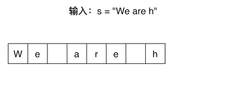

剑指offer05题解
题目
请实现一个函数，把字符串s中的每个空格替换成”%20”。
示例 ：
输入：s = “We are happy.”
输出：”We%20are%20happy.”
限制： 0 <= s 的长度 <= 10000
题解
方法一：遍历添加到新建字符串
思路:
因为题目没有限制是否开辟新的空间，我的第一反应便是新建一个字符串，然后遍历输入的字符串，判断是否是空格：不是->直接拷贝；是->拷贝”%20”。但是由于我对字符串的认知还停留在C语言数组阶段，所以刚开始写的时候纠结C++中定义字符串是否需要确定大小？确定大小的话是不是得先遍历一边数组进行确定？然而C++中的字符串有了新的定义概念！
字符串是若干字符组成的有限序列，也可以理解为是一个字符数组
在C语言中，把一个字符串存入一个数组时，也把结束符 ‘\0’存入数组，并以此作为该字符串是否结束的标志。
在C++中，提供一个string类，string类会提供 size接口，可以用来判断string类字符串是否结束，就不用’\0’来判断是否结束。
那现在可以回答我一开始的疑问了，C++定义字符串直接 string s1(默认初始化，s1是个空串)而在C中定义字符串数组需要确定大小。
代码：
1 | class Solution |
方法二：扩充原字符串+双指针
思路：
现在我们考虑怎么执行替换操作。最直观的做法是从头到尾扫描字符串，每次碰到空格字符的时候进行替换。由于是把l个字符替换成3个字符，我们必须要把空格后面所有的字符都后移2字节，否则就有两个字符被覆盖了。每次对字符后移太繁琐，我们不妨换个角度讲从前向后替换改成从后向前替换。
我们可以先遍历一次字符串，这样就能统计出字符串中空格的总数，并可以由此计算出替换之后的字符串的总长度。每替换一个空格，长度增加2，因此替换以后字符串的长度等于原来的长度加上2乘以空格数目。我们从字符串的后面开始复制和替换。首先准备两个指针：P1和P2。P1指向原始字符串的末尾，而P2指向替换之后的字符串的末尾。
代码：
1 | class Solution { |
总结
通过这个题目让我对于C++字符串的知识点有了深刻认识，其次便是对于for循环中结束条件一定要仔细思考，弄清楚for循环终点的特点，切忌凭感觉！


微信号:Shaun_cy
QQ号:1207444851